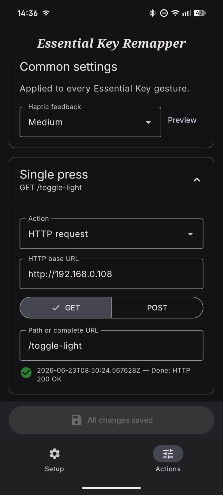
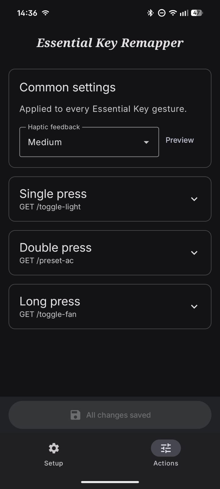

Fast utilities
Flashlight, camera, assistant, sound mode, screenshot, lock screen, notifications, or Quick Settings.
Open anything
Launch an installed app or open an HTTP or HTTPS URL.
Media and navigation
Play/pause, next, previous, Home, Back, Recents, or the Android power menu.
Suggested everyday layout
| Gesture | Example | Why |
|---|---|---|
| Single press | Flashlight | Fast and easy to remember. |
| Double press | Camera | Useful without unlocking the phone workflow first. |
| Long press | Favorite app or assistant | Intentional gesture for a larger action. |
Home automation
Each gesture can send an HTTP GET or POST request. Configure a local base URL and a path such as /toggle-light, /preset-ac, or /toggle-fan.

HTTP requests can affect devices and services on your network. Use endpoints you control, prefer HTTPS outside trusted local networks, and avoid placing secrets directly in URLs.
Separate actions for every gesture
